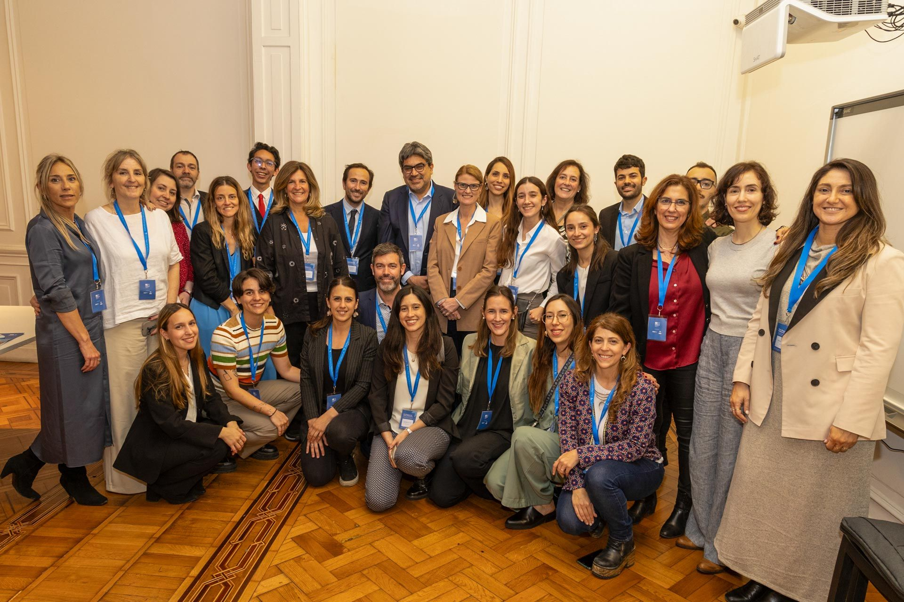

Especialista en Educación para la Paz
La Educación para la Paz promueve el desarrollo pleno y el bienestar integral, acompañando a las personas en el desarrollo de habilidades para comprenderse, dialogar y construir bienestar común.
Construyendo bienestar a través de la educación
Talleres y formaciones
Educación para la Paz | Nonviolent Learning | Resilience for a Culture of Peace | Human Leadership | Comunicación No Violenta y SEL (para docentes, jóvenes y equipos).
Consultoría curricular
Integración de paz, ética y ciudadanía global en planes de estudio (escuelas y universidades).
Diseño de proyectos
Creación y monitoreo de iniciativas educativas con enfoque de equidad e inclusión.
Sobre mí
Herramientas para construir una cultura de paz sostenible
Soy Milagros Rosón, especialista en Educación para la Paz, con una Maestría de la Universidad para la Paz de Naciones Unidas (UPEACE) y estudios de posgrado en Liderazgo Humano y Educación Emocional. Creo y acompaño experiencias de aprendizaje que promueven la empatía, la resiliencia y la acción ética. He trabajado con organizaciones internacionales, escuelas y comunidades en Argentina, Chile, Costa Rica y Suiza.
Facilito talleres y formaciones (online y presenciales), realizo consultoría curricular y apoyo el diseño y evaluación de proyectos.
Sobre EduPaz Argentina
EduPaz Argentina es una iniciativa dedicada a fortalecer una cultura de paz a través de programas de formación, acompañamiento e investigación educativa. Reconocida por la UNESCO y la Asamblea General de las Naciones Unidas como un pilar fundamental para la construcción de una Cultura de Paz (Declaración y Programa de Acción, 1999).
La Educación para la Paz constituye el marco integral desde el cual se desarrollan enfoques como la no violencia activa, la empatía, la resolución pacífica de conflictos, el diálogo intercultural y la educación socioemocional. Estos principios guían la labor de EduPaz en su propósito de unir el desarrollo interior con la transformación social.
Aurora – Formación Docente y Currículum para la Paz
Aurora representa el despertar educativo — llevar la paz del ámbito teórico al aula, formando educadores como agentes de cambio.
Público: docentes, equipos directivos y educadores.
Ejes: educación no violenta (CNV), resolución de conflictos, integración curricular de la paz.
Modalidades: diseño curricular, cursos, materiales pedagógicos y acompañamiento institucional.
Amanay – Comunidad y Cultura de Paz
Simboliza la raíz social de la paz: construir vínculos de confianza, respeto y cooperación desde la comunidad.
Público: estudiantes, familias, comunidades y organizaciones sociales.
Ejes: aprendizaje socioemocional, ciudadanía global, liderazgo humano.
Modalidades: talleres, círculos de diálogo y proyectos colaborativos.
Lauken – Investigación y Reflexión sobre la Paz
Lauken representa la quietud reflexiva y el pensamiento crítico desde el cual se generan nuevas comprensiones sobre la paz y la educación.
Público: universidades y líderes educativos.
Ejes: teoría de la paz, educación transformadora, investigación aplicada.
Modalidades: seminarios, publicaciones y materiales teóricos.
“Paihuen” significa estar en paz o lugar para estar en paz — un estado de tranquilidad, seguridad y libertad donde una persona puede ser ella misma.
Portfolio
Imágenes de formaciones, conferencias y proyectos educativos en Argentina, Chile, Costa Rica y Suiza.